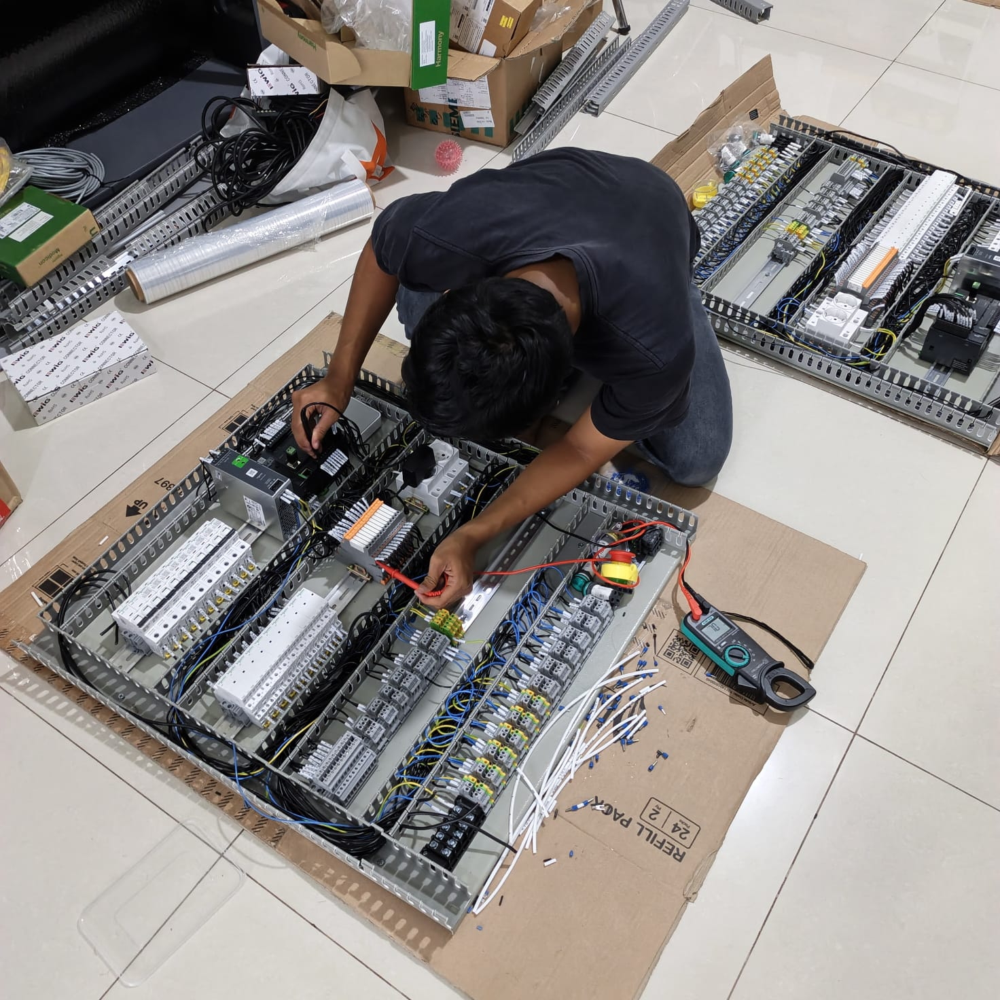
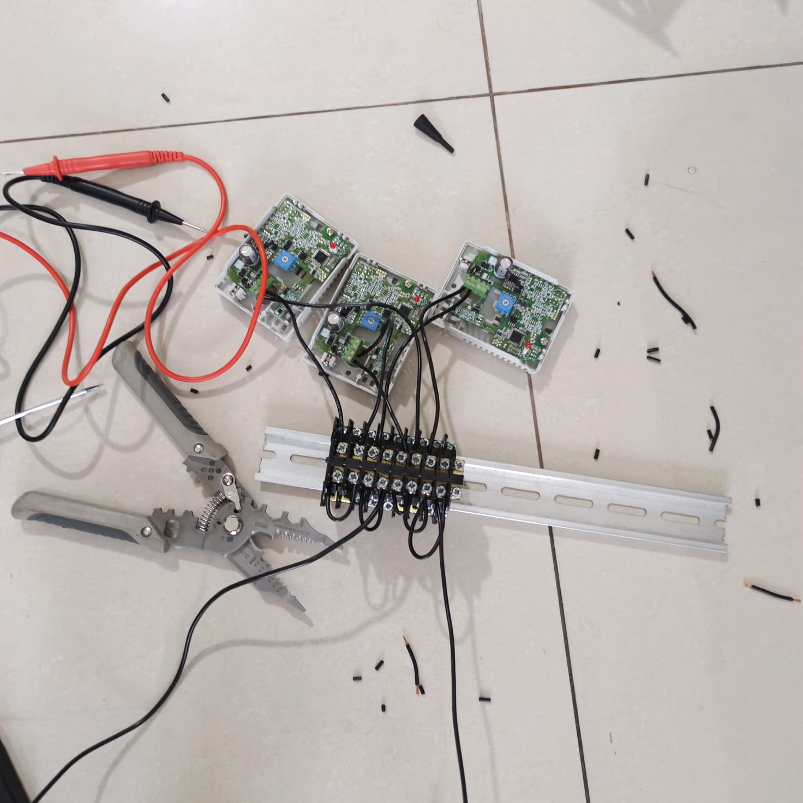
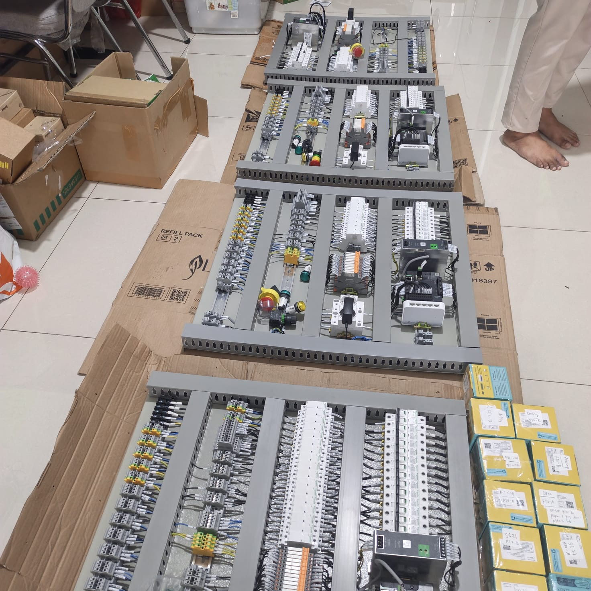
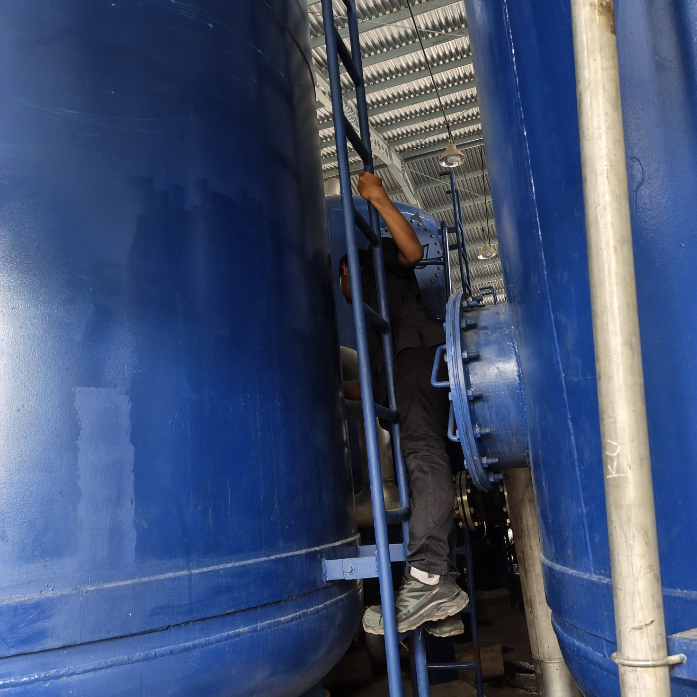
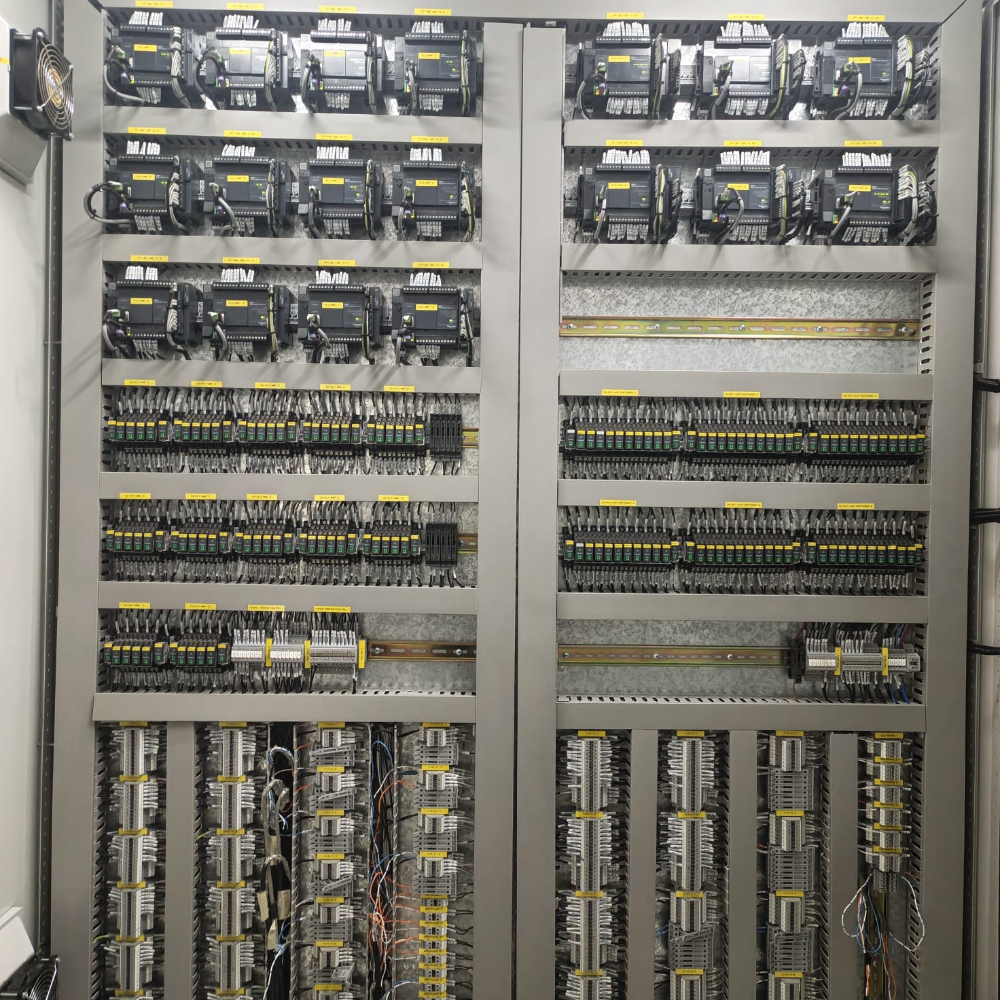

BAB IV
A. Kesimpulan
Praktik kejra lapangan(PKL) memberikan pengalaman yang sangat bermanfaat dalam menghubungkan teori yang dipelajari di sekolah dengan penerapannya di dunia industri. Selama pelaksanaan PKL, penulis memperoleh pengetahuan mengenai proses kerja di perusahaan, penggunaan peralatan otomasi industri, penerapan keselamatan kerja(K3LH), serta pentingnya disiplin, tanggung jawab, dan kerja sama dalam lingkungan kerja. Kegiatan PKL juga meningkatkan keterampilan teknis dan kemampuan beradaptasi sehingga menjadi bekal yang baik untuk memasuki dunia kerja.
B. Saran-saran
Berdasarkan hasil yang di dapat saat melaksanakan praktik kerja lapangan(PKL) di PT.Istar Otomasi Industri,
penulis ingin memberikan saran-saran yang mungkin bisa menjadi bahan pertimbangan di masa yang mendatang.
Adapun penulis sarankan bagi:
Siswa-Siswi
Sekolah
11
Instansi
LAMPIRAN
A. Biodata penulis
Peserta praktek kerja lapangan
Nama siswa : Salman Al Farizy
Nomor induk siswa :
Lokasi/Tanggal Kelahiran : Tangerang, Kamis 09 April 2009
Jenis kelamin : Laki-laki
Kelas : XI(dua belas)
Kopetensi keahlian : Teknik Otomasi Industri (TOI)
Alamat : Kp.Cirewed, Desa Sukadamai,RT/RW:02/04,Kec.Cikupa
Nama sekolah : SMKN 4 Kabupaten Tangerang
Alamat sekolah : Jl. Lingkar Pasar Pinang, Kec.Tigaraksa, Kab.Tangerang-Banten :15720
12
RECORD
Continueity test

Set slave id

Wiring result

Checking Preassure transmiter

Melihat panel tingkat industri

Continueity test
Set slave id
13